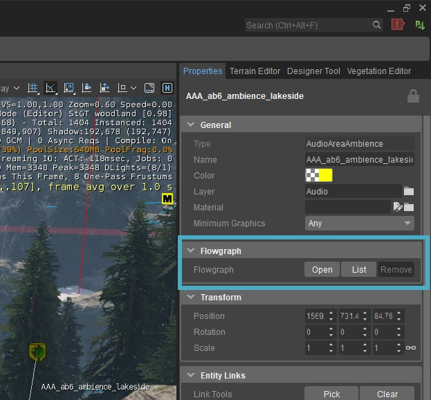
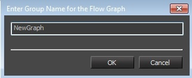
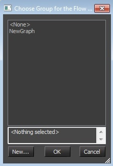
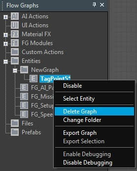
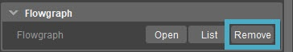
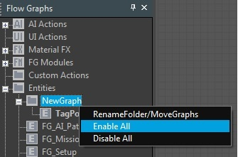

Создание нового графика
Графики, принадлежащие определенной сущности, сохраняются как свойство сущности. Когда объект сохраняется или экспортируется, соответствующий график также автоматически сохраняется.
Выберите объект в окне просмотра и перейдите к Flow Graph раздел под Свойства вкладка. Есть три кнопки: Открыть, Списоки Удалить.
Существует два способа создать новый график для сущности:
- Нажмите Открыть в Flow Graph раздел под Свойства вкладка, чтобы создать новый Flow Graph.
- Щелкните правой кнопкой мыши объект в окне просмотра и выберите Создать Flow Graph.

Если это первый Flow Graph на уровне, появится новое диалоговое окно (см. ниже), с просьбой войти в новую группу для Flow Graph.

Введите имя и нажмите OK. Это создаст новый график и автоматически поместит его в группу.
Если группа Flow Graph уже существует, вы увидите следующее диалоговое окно:

Нажмите Новый... чтобы создать новое имя группы для Flow Graph или выбрать имя из существующей группы.
В окне обзора графика отобразится новый график, и он автоматически откроется. Вы можете щелкнуть правой кнопкой мыши узел графика в окне обзора, чтобы отобразить контекстное меню с дополнительными параметрами для редактирования графика.
Удаление графика
Поскольку граф принадлежит объекту на уровне, граф удаляется при удалении связанного объекта. Удалить график можно следующим образом:
- Графики можно удалить из сущности с помощью контекстного меню графика или кнопки «Удалить» под названием сущности. Свойства вкладка.
- Удаление графика путем удаления объекта графика: выберите объект и в Редактировать меню, нажмите Удалить.
- Удаление графика без удаления объекта графика: в окне Flow Graph редактора Flow Graph щелкните правой кнопкой мыши график и щелкните Удалить график.


Переименование и перегруппировка графиков
Имя графа всегда является именем сущности, на которой он был создан. При изменении имени объекта имя в окне обзора графика автоматически изменяется. В контекстном меню графика есть возможность переместить график в другую группу.
В редакторе Flow Graph в окне Flow Graph щелкните правой кнопкой мыши график и выберите Изменить папку. Если группы не были созданы, вам будет предложено ввести новое имя группы. Введите желаемое имя группы и подтвердите его, нажав Войти или нажав OK.
Если на уровне уже существует одна или несколько групп, появится новое окно, в котором вы сможете выбрать группу, в которую вы хотите поместить график. Выберите группу и нажмите OK для подтверждения или выберите Новый открыть окно создания группы для создания новой группы.
Отключение и включение графиков
Чтобы включить или отключить графики, щелкните правой кнопкой мыши нужный график в окне обзора Flow Graph и выберите Отключить. При отключении узлы в графах будут игнорироваться во время работы игры.
Вы можете выбрать Включить в контекстном меню, чтобы снова активировать график.
Чтобы отключить целые графики внутри группы, щелкните правой кнопкой мыши папку группы в окне обзора Flow Graph и выберите Отключить все. Вы также можете выбрать Включить все чтобы включить все графики в группе.

Когда уровень экспортируется с некоторыми графиками в отключенном режиме, эти графики останутся в игре в отключенном состоянии.